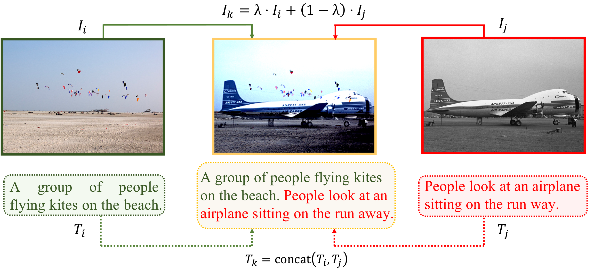
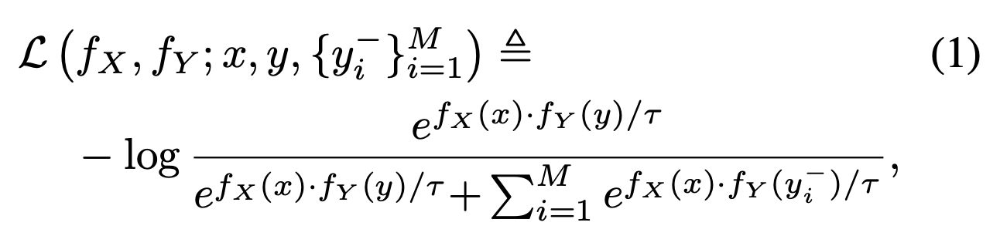
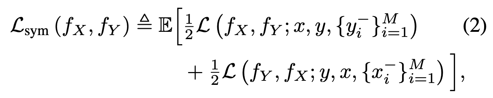
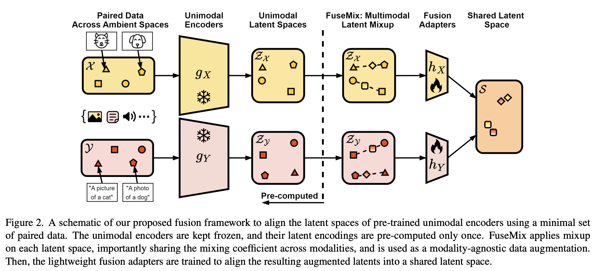
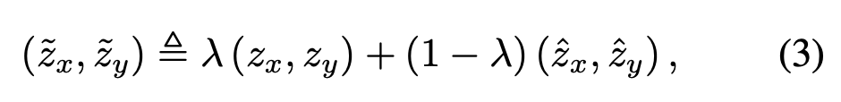
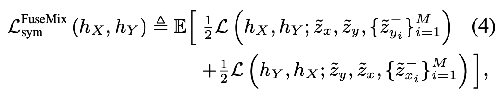
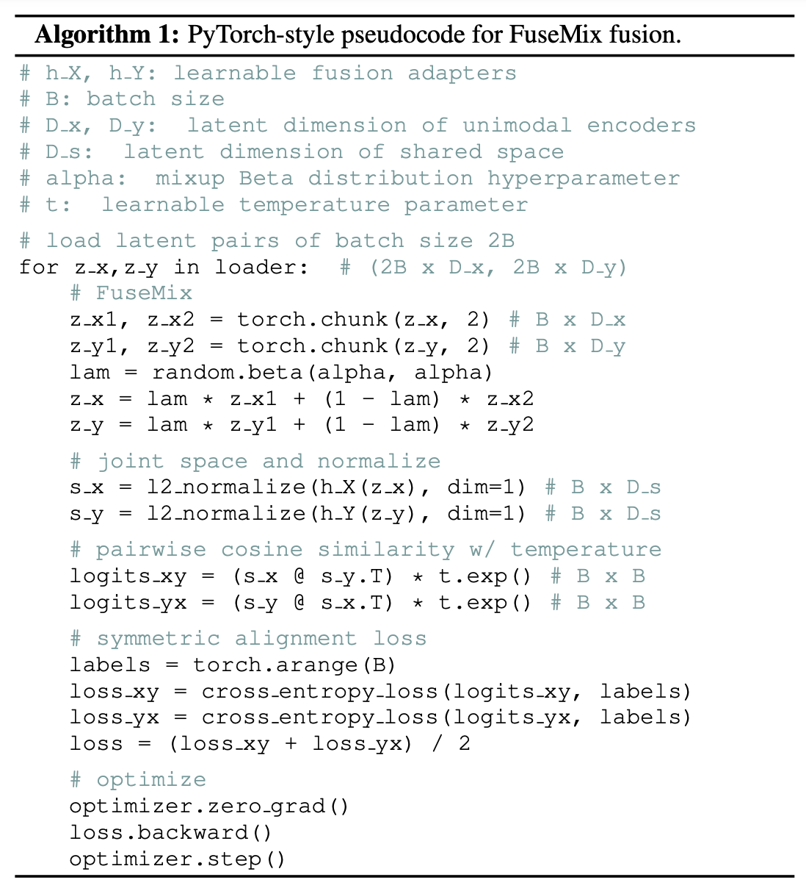
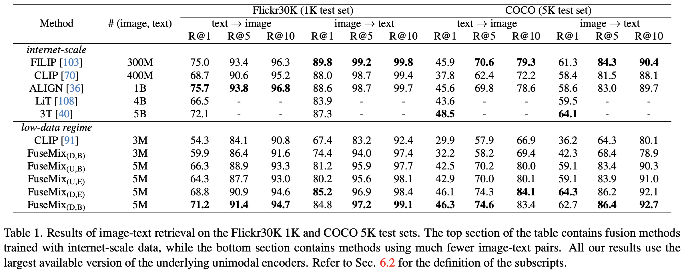
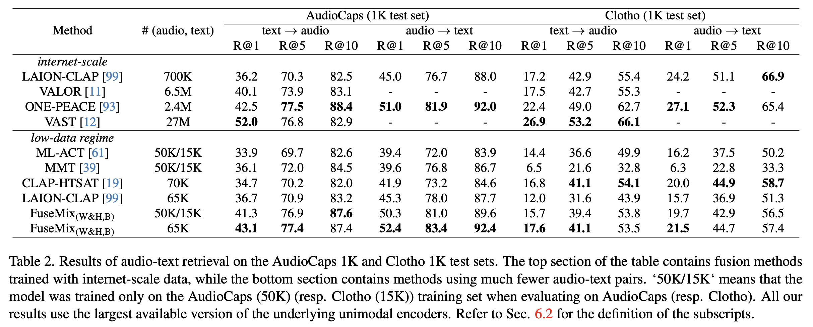

[논문 리뷰] Data-Efficient Multimodal Fusion on a Single GPU
논문 정보
- CVPR 2024 Highlight
- Keyword : multimodal learning, mixup augmentation, computation/data efficient
- paper
Abstract
-
multimodal alignment의 목표 : multimodal input 간 공유하는 single latent space를 배우는 것
이 space에서 가장 강력한 모델들은 paired input이 있는 massive dataset에 large-scale computational resource를 써서 학습됨 → practical 상황에서 train하기에 너무 제한적으로 expensive
-
이미 존재하는, 많은 양의 unimodal data에 pre-trained 된 unimodal encoder들이 multimodal model을 훨씬 낮은 cost로 unimodal로부터 만드는 데에 효과적일 것이라 추측
-
pre-trained unimodal encoder의 latent space에서 작동하는 multimodal augmentation scheme인 FuseMix를 제안
- image-text/audio-text retrieval에서 SOTA에 비교될만한, 혹은 더 좋은 성능
- with 더 적은 compute/data(GPU/image-text pairs)
- pre-trained text-to-image generative model을 audio-to-image로 만들 수 있는 방법 보임
Introduction
-
multimodal machine learning이 보인 가능성(application)
- understanding-based application
- generation-based application
- main-stream attention
-
이 논문의 interest : multimodal alignment(또 다른 말로 multimodal fusion)
목적 : 다양한 modality의 input이 공유할 수 있는 single latent space를 배우는 것
Related Work
Multimodal Learning
-
overarching objective : 여러 modality의 data를 함께 인신(jointly perceive)할 수 있는 universal model을 만드는 것 modality는 image, text, audio, video를 포함하여 다양한 data stream
-
standard approach : 사용하는 모든 modality에 대해 paired data로 end-to-end로 학습시키는 방법
이 approach는 does not scale well : scratch부터 large-scale multimodal model을 학습하는 건 compute/data intensive라소..
-
더 practical approach
pre-trained unimodal network로부터 bootstrap하는 것
하지만 pre-trained network로 back propagation해야함 : unimodal network가 커서 significant overhead
-
이 논문의 setting과 더 관련있는 연구는, multimodal model이 하나의 shared latent space를 학습하고, 그 shared space에 여러 modality가 함께 encoded 될 수 있는(ex. multimodal alignment)
pioneer
CLIP ALIGN
text와 image를 jointly embed하기 위해 contrastive objective, dual-encoder architecture로 학습
CoCa: Contrastive Captioners are Image-Text Foundation Models (TMLR 2022) : contrastive objective에 autoregressive(자기회귀) image captioning term을 추가 (3T) Three towers: Flexible contrastive learning with pretrained image models (arxiv 2023) : pre-trained classifier를 가지고 text와 image encoder를 latent space에 align LiT: Zero-Shot Transfer With Locked-Image Text Tuning (CVPR 2022) : freeze한 pre-trained image classifier를 image encoder로 사용하고 그걸 가지고 text encoder를 align
위의 접근들은 성공했지만, 모두 하나 이상의 encoder를 scratch부터 학습시킴 → 많은 gpu, expensive gradient computation을 요구
또 image-text pair로 이루어진 400M-5B정도의 internet-scale dataset을 사용
CLIP을 extend해서 다른 modality(ex video, audio)를 포함하도록 했지만, 좋은 성능을 위해서는 CLIP fine-tuning을 필요로 함
비슷하게, 다른 audio-text fusion 방법을 encoder의 fine-tuning이나 추가적인 학습 데이터를 필요로 함
Audio Retrieval with WavText5K and CLAP Training (arxiv 2022) On Metric Learning for Audio-Text CrossModal Retrieval (Interspeech 2022) Large-scale contrastive language-audio pretraining with feature fusion and keyword-to-caption augmentation (ICASSP 2023)
마지막으로 ImageBind는 image를 anchor modality로 contrastive objective를 써서 6개의 modality간의 shared latent space를 학습하는데, 이때 여러 modality의 encoder를 함께 scratch부터 학습
ImageBind: One Embedding Space To Bind Them All (CVPR 2023)
이 모든 연구들과 달리, 이 논문은 computational/data efficiency에 초점을 두고 pre-trained된 unimodal encoder를 freeze, 적은 양의 multimodal paired data를 사용해서 하나의 GPU에서 실험함
Data Augmentation
-
역사적으로 data augmentation은 dataset size와 diversity를 종합적으로 높이기 위해 사용됐음
-
image domain에서 대표적인 augmentation은 horizontal flip, random crop, color jitter ..
-
하지만 domain마다 semantic information을 잘 보존하는 augmentation을 디자인 하는 것은 전문 지식을 필요로 함
예를 들어, medical image domain에서 나이브하게 color jitter를 적용하는 것은 cancer classification 같은 task에서 중요한 정보를 망가뜨릴 수 있음
최근 여러 연구에 불구하고, modality-agnostic한 augmentation scheme의 부족
Self-supervised representation learning from random data projectors(arxiv 2023) : random projection
Randomized Quantization: A Generic Augmentation for Data Agnostic Self-supervised Learning (ICCV 2023) : randomized quantization
-
input masking 또한 여러 modality에서 성공적으로 적용되었지만, 각 modality 각각에 적합한 masking strategy를 판단하는데 여전히 전문지식이 요구된다고 생각
BERT: Pre-training of deep bidirectional transformers for language understanding (ACL 2019) Masked autoencoders are scalable vision learners (CVPR 2022) Masked autoencoders that listen (NIPS 2022) Videomae: Masked autoencoders are data-efficient learners for self-supervised video pre-training (NIPS 2022)
-
이러한 어려움 때문에 multimodal learning에서 data augmentation이 많이 연구되지 않은 것은 어찌보면 당연
Mixgen: A new multimodal data augmentation (WACV 2023) : input-level joint data augmentation for vision-language representation - interpolate images, concatenate text

-
이 연구에서는 latent space에서 작동하는 multimodal augementation scheme을 제안, 이 방법은 mixup으로부터 영감을 받음.
mixup: Beyond Empirical Risk Minimization (ICLR 2018)
Problem Setting and Background
Multimodal Fusion as Alignment
- 이 연구에서는 multimodal fusion을 alignment의 관점에서 정의
Alignment
multimodal input 간 공유하는 single latent space를 학습하는 task
Formally,
두 data modality $\mathcal{X}$와 $\mathcal{Y}$(e.g. images/texts)가 주어졌을 때 각 modality를 공유된 latent space $\mathcal{S}$로 embed하는 network
$$ f_X:\mathcal{X}\rightarrow\mathcal{S}, f_Y:\mathcal{Y}\rightarrow\mathcal{S} $$를 학습하는 것을 목표로 함
Contrastive learning for multimodal alignment
-
최근 연구에서 contrastive learning이 multimodal alignment의 대표적인 objective
(ALIGN) Scaling up visual and vision-language representation learning with noisy text supervision (ICML 2021) Align before Fuse : Vision and language representation learning with momentum distillation (NIPS 2021) (CLIP) Learning transferable visual models from natural language supervision (ICML 2021) LiT: Zero-Shot Transfer with Locked-image text Tuning (CVPR 2022)
-
ambient space에서 semantic하게 비슷한 multimodal input은 가깝게, 다른 input은 멀게 encode되는 joint latent space를 학습하는 것을 목표로 함.
- 이를 위해서는 positive pair로 semantically 비슷한 multimodal input이 있어야 하고(image와 그에 대응되는 text caption) semantically 다른 negative pair(unrelated images, texts)가 있어야 한다.
-
따라서, 가정이 우리가 modality $\mathcal{X},\mathcal{Y}$의 joint distribution에서 positive pair를 sampling하는 방법이 있다는 것
- Negative pair는 각 modality의 marginal distribution $p_X, p_Y$의 product(곱)으로부터 sampling함으로써 얻어짐
-
즉, positive pair $(x,y)\sim p_{X,Y}$ negative pair $(x_i^-,y_i^-)\sim^\text{i.i.d}p_Xp_Y(i=1,...,M)$
-
multimodal alignment의 맥락에서 contrastive learning은 InfoNCE loss를 쓰는데,

- $a· b ≜ \frac{a ⊤b} {∥a∥^2∥b∥^2}$ : cosine similarity
- $\tau>0$ : fixed or learnable scalar temperature parameter
-
최종 objective는 InfoNCE의 symmetric 버전

- Expectation with respect to positive pair $(x,y)\sim p_{X,Y}$ and M negative pair $(x_i^-,y_i^-)\sim^\text{i.i.d} p_Xp_Y$
-
contrastive learning으로 alignment를 하는 것이 다양한 multimodal downstream task에 대해 zero-shot transfer를 가능하게 함을 여러 연구에서 보였음
ImageBind: One Embedding Space To Bind Them All (CVPR 2023) Audioclip: Extending clip to image, text and audio (ICASSP 2022) TR0N: Translator networks for 0-shot plug-and-play conditional generation (ICML 2023) (CLIP) Learning transferable visual models from natural language supervision (ICML 2021)
-
contrastive learning으로 alignment를 하면, general multimodal setting에서 성능이 좋아짐
-
understanding-based
-
generation-based
-
mutual information maximization에 이론적 motive를 줌
Learning representations by maximizing mutual information across views (NIPS 2019) Align before fuse: Vision and language representation learning with momentum distillation (NIPS 2021) Representation learning with contrastive predictive coding (arxiv 2018) Contrastive multiview coding (ECCV 2020)
-
Mixup
Mixup은 supervised learning에서 general-purpose data augmentation
mixup: Beyond Empirical Risk Minimization (ICLR 2018)
-
data와 label의 쌍 $(x,l),(\hat{x},\hat{l})$ 이 주어졌을 때, convex combination으로 augmented sample $(\tilde{x},\tilde{l})$을 construct
$$ \tilde{x} ≜ λx + (1 − λ)\hat{x} $$ $$ \tilde{l} ≜ λl + (1 − λ) \hat{l} $$$\lambda\in(0,1)$ 은 interpolation coefficient - 보통 sampled from Beta distribution $\mathcal{B}(\alpha,\beta)$
-
모델을 학습하는데 쓰이는 loss는 augmented data/label pair로 optimize됨
-
관련 후속 연구
-
mixup의 robustness/generalization
How does mixup help with robustness and generalization (ICLR 2021)
-
calibration
On mixup training: Improved calibration and predictive uncertainty for deep neural networks (NIPS 2019)
-
-
variation of mixup
-
label이 unavailable한 상황의 contrastive learning
Towards domain-agnostic contrastive learning (ICML 2021)
-
label을 proxy로 생성
i-Mix: A Domain-Agnostic Strategy for Contrastive Representation Learning (ICLR 2021)
-
-
multimodal learning 맥락
-
spherical interpolation을 사용하는 mixup strategy를 제안, CLIP을 fine-tune
Geodesic Multi-Modal Mixup for Robust Fine-Tuning (NIPS 2023)
이미 align된 shared latent space를 필요로 해서 우리의 setting에 바로 적용하기 어려움
-
Motivation
최근의 성공에 불구하고 multimodal fusion은 large computational, data overhead(+ modularity 부족)에서 비롯되는 크리티컬한 bottleneck이 있음
Computational Burden
-
model scale이 성능과 downstream capability의 key라는 최근 advance
-
모델 scale을 키우는게 performance에 크게 도움이 되지만, 그런 모델을 학습하는데 드는 cost도 그에 맞춰 증가, ml practitioner, 연구자들은 쓸 수 없음
-
multimodal model은 더 그럼
-
multimodal fusion에서 jointly train $f_X,f_Y$
두 네트워크를 메모리에 올려서 backpropagation해야 한다는 뜻
또 각 network의 scale을 키울수록 비용이 큰 gradient computation은 빠르게 증가
-
-
목표: multimodal fusion에서 computational consideration을 prioritize하는 효율적인 framework를 디자인하는 것이 목적
Scarcity of High-Quality Paired Data
대부분의 multimodal application에서 multimodal paired data를 모으는 것은 필요한 단계
== modality의 joint distribution $(x,y)\sim p_{X,Y}$에서 paired sample을 얻는 것
-
하지만 high-quality paired data는 보통 드물고 얻기 어렵다
-
쓰려고 하는 모든 modality를 포함하는 paired data가 부족
ImageBind: One Embedding Space To Bind Them All
-
noisy sample
BLIP: Bootstrapping language-image pre-training for unified vision-language understanding and generation (PMLR 2022)
Too Large; Data Reduction for Vision-Language Pre-Training (ICCV 2023)
-
-
반면 unimodal data의 high-quality sample은 비교적 싸고 많이 모을 수 있다
각 modality의 marginal distribution $x\rightarrow p_X, y\rightarrow p_Y$
unimodal data는 informative intrinsic supervisory signal을 주면서도 label pairing 없이 모을 수 있음 - self-supervised learning의 성공으로 증명됨
→ 사용가능한 unimodal signal을 가지고 multimodal paired data를 sourcing하는 걸 처리하고자 함
Tight Coupling From End-to-End Fusion
$f_X,f_Y$를 scratch부터 jointly training하는 semantically 의미있는 shared latent space를 만들지는 모르지만, 학습된 network는 tightly coupled
-
network의 어떤 부분을 수정하면 보통 network를 end-to-end로 re-training해야 함 → 각 modality에서 연구에 발전이 있을 때마다 re-training없이는 반영할 수가 없음
Energy and policy considerations for deep learning in NLP (ACL 2019)
-
각 component가 unimodal의 발전에 맞추어 minimal overhead로 쉽게 대체될 수있도록 multimodal fusion의 plug-and-play framework를 디자인 하는 것을 목표로 함
Method
- computational/data efficiency, modularity를 고려한 multimodal fusion framework를 제안 (Towards Efficient Multimodal Fusion)
- latent space에서 multimodal augmentation scheme인 Fusemix를 제안 (Fusemix: Multimodal Latent Mixup)

Towards Efficient Multimodal Fusion
두 encoder $f_X=h_X\circ g_X, f_y=h_Y\circ g_Y$
원래 $f_X,f_Y$는 S로의 direct mapping
즉, intermediate latent space인 $\mathcal{Z_\mathcal{X}}, \mathcal{Z_\mathcal{Y}}$ 로의
$$ g_X:\mathcal{X}\rightarrow\mathcal{Z}_{\mathcal{X}}, g_Y:\mathcal{Y}\rightarrow\mathcal{Z}_{\mathcal{Y}} $$그 후에 fusion adapter라고 부르는
$$ h_X:\mathcal{Z}_{\mathcal{X}}\rightarrow S, h_Y:\mathcal{Z}_{\mathcal{Y}}\rightarrow S $$- 여기서의 key insight : $g_X,g_Y$ 모두 freeze한 pre-trained unimodal encoder를 쓴다는 것과 fusion adapter $h_X,h_Y$를 multimodal fusion을 위한 learnable head로 만든다는 것
장점:
Computational Improvements
-
Equation 1의 alignment loss(InfoNCE Loss)
를 다음과 같이 다시 쓸 수있음( latent space에서의 pair )
$$ \mathcal{L}(h_X,h_Y;g_X(x),g_Y(y),\{g_Y(y_i^-)\}^M_{i=1}) $$ -
Equation 2의 contrastive objective(symmetric version)
위 식의 expectation을 encoding의 positive pair $(g_X(x),g_Y(y))$, negative pair $(g_X(x_i^-),g_Y(y_i^-))$ 에 대해 구함
- $(g_X(x),g_Y(y)), (g_X(x_i^-),g_Y(y_i^-))$ 의 distribution은 encoder $g_X,g_Y$에 넣어서 얻어짐
- expectation이 freeze된 $g_X,g_Y$에 의해서만 결정되는(trainable 한 $h_X,h_Y$ 가 아니라) distribution에 대해 구해지기 때문에, unimodal encoder $g_X,g_Y$는 어떤 gradient computation에도 쓰이지 않음
- d즉, unimodal encoder는 backpropagation이 아니라 latent space의 sample을 제공하는데만 필요하기 때문에 간단하게 이 샘플들을 pre-compute하고 training동안에는 unimodal encoder를 치워버릴 수(메모리에서) 있다 → multimodal fusion을 하는 동안 큰 encoder를 메모리에 올릴 필요가 없어서 computation을 아낌
- fusion을 하면서 메모리에 올라가는 유일한 parameter는 learnable fusion adapter 인데, unimodal encoder에 비해 매우 lightweight
- 이 연구의 전체 실험 모든 step에서, 하나의 GPU만 필요함
Paired Data Efficiency
pre-trained unimodal encoder의 latent space를 $\mathcal{Z}_{\mathcal{X}}, \mathcal{Z}_{\mathcal{Y}}$ 로 세팅함으로써 이 space가 가지고 있는 rich modality-specific semantic에서 이점을 얻을 수 있다
-
이 information을 scratch부터 학습하면 multimodal fusion에 대해 redundant할 수 있어서 pre-trained unimodal encoder를 쓰는 건 large-scale multimodal paired data의 필요성을 줄일 수 있는 효과적인 방법
-
저자는 이 효과를 unimodal latent space에서 joint space로의 distillation으로 해석함
contrastive objective가 이러한 distillation에 효과적이라는 것이 다른 연구에서 보여졌음
Three towers: Flexible contrastive learning with pretrained image models (arxiv 2023)
Contrastive representation distillation (ICRL 2020)
즉, multimodal fusion에 pre-trained unimodal encoder를 사용하는 것은 scratch에서 end-to-end로 학습하는 것보다 적은 paired data를 필요로 함
Plug-and-Play Framework
multimodal fusion에서 이 연구의 modular approach가 1)unimodal encoder $g_X,g_Y$의 choice, 2)underlying modality $\mathcal{X},{Y}$ 모두에 대해 상관없다(갈아끼울 수 있다)
- arbitrary pre-trained unimodal encoder를 결함함으로써 multimodal fusion과 unimodal learning을 decoupling할 수 있음
- unimodal encoder가 발전해도, 그걸 plug-and-play manner로 multimodal fusion에 사용할 수 있음
Fusemix : Multimodal Latent Mixup
paired data의 minimal sample로 multimodal fusion을 하는것이 목표이므로, data augmentation을 통해 synthetic multimodal pairs $(\tilde{x},\tilde{y})\in\mathcal{X}\times\mathcal{Y}$ 를 생성하는 것도 자연스러운 방향
-
하지만 multimodal data의 heterogeneity에 의해 ambient space $\mathcal{X},\mathcal{Y}$에 바로 semantic하게 의미있는 data augmentation을 형성하는 것은 challenging하다
Mixgen: A new multimodal data augmentation (CVPR 2023)
-
반면에, $\mathcal{Z}_\mathcal{X},\mathcal{Z}_{\mathcal{Y}}$ 는 보다 homogeneous한 alternative인데, 둘 다 pre-trained unimodal encoder의 intermediate latent space이기 때문이다.
따라서 modality 종류와 unimodal encoder의 선택에 상관없는 simple/effective multimodal augmentation scheme-Fusemix-을 제안
-
mixup으로부터 아이디어를 얻음(augmented sample이 random convex combination으로부터 만들어짐)
mixup: Beyond Empirical Risk Minimization
-
$\mathcal{Z}_{\mathcal{X}},\mathcal{Z}_{\mathcal{Y}}$ 모두에서 sample간 linear interpolation
-
두 latent space가 모두 pretrained unimodal encoder에서 얻어졌기 때문에 linear interpolation이 ambient space에서 하는 것보다 semantically meaningful하다고 생각
-
latent space에서의 interpolation은 well-established되어있다.
Analogies Explained : Towards understanding linear word analogies (ACL 2019) ImageBind: One Embedding Space To Bind Them All (CVPR 2023) Efficient estimation of word representations in vector space (ICLR 2013) Glove: Global vectors for word representation (EMNLP 2014)
-
-
각 latent space에서 나이브하게 random sample을 섞는 것은 augmented latent pair $(\tilde{z_x},\tilde{z_y})\in\mathcal{Z}_{\mathcal{X}}\times\mathcal{Z}_{\mathcal{Y}}$ 에서 $\tilde{z}_x,\tilde{z}_y$가 서로 관련되지 않는 것만 만들 수 있다
→ sematic하게 meaningful한 augmented pair가 생기도록 across modality에서 interpolation의 structure를 부과해야 함
→ convex combination!
-
두 positive(x,y가 positive) multimodal pair $(z_x, z_y) ≜ (g_X(x), g_Y (y)), (\hat{z}_x, \hat{z}_y) ≜ (g_X(\hat{x}), g_Y (\hat{y}))$ ($(x, y),(\hat{x}, \hat{y}) ∼^{\text{i.i.d.}} p_{X,Y}$) 가 주어질 때 대응되는 augmentation은

$\lambda\in(0,1)$ 은 shared interpolation coefficient
modality 간 $\lambda$를 공유하는 것은 augmentation이 semantically consistent하다는 것을 보장, 즉 $\tilde{z_x},\tilde{z_y}$가 여전히 valid한 positive pair가 됨
negative pair에 대해서도 같은 방법으로 interpolation
-
intermediate latent space에서 Fusemix를 사용한 연구의 loss는

expectation taken w.r.t. positive pair/negative pair
$λ ∼ B(α, β)$
-
Fusemix fusion 알고리즘
- pre-computed multimodal latent pair sample
- batch size $B ≜ M + 1$
- $\alpha=\beta$

Experiments
image,text,audio pairing
Implementation Details
Unimodal Latent Extraction
-
32GB NVIDIA V100 GPU 하나만 씀
- pre-trained unimodal encoder로 latent를 pre-compute, 이후에 encode를 제거
- 각 modality에서 한번에 하나씩 latent extract → parameter가 billion단위인 large-scale encoder를 쓸 수있도록 함(end-to-end fusion이었으면 single-GPU에서 불가능했을)
-
Transformer-based unimodal encoder를 사용
끝에서 두번째 layer에서 low-dimensional latent를 extract(of either CLS token, mean-pooled token)
Multimodal Latent Fusion
fusion adapter로 inverted bottleneck architecture를 사용하는 lightweight MLP를 사용
Scaling MLPs: A Tale of Inductive Bias (arxiv 2023)
How far can we go without convolution: Improving fully connected networks (arxiv 2015)
MLP-Mixer: An all-MLP architecture for vision (NIPS 2021)
-
각 MLP는 residual block으로 이루어져 있고, 각 modality를 shared space에 embed하기 위해 그 뒤에 마지막으로 512 dimension의 projection layer가 옴
-
fusion adapter가 low-dimensional latent에서 작동하므로 train할 때 computational cost가 적고 하나의 GPU를 사용함에도 큰 batch size를 쓸 수있음(B=20K on V100 GPU)
batch size가 크면 contrastive learning이 잘된다는 것이 이전 연구에서 보여짐
-
모든 실험에서, 위에서 언급한 $\mathcal{L}^\text{FuseMix}_\text{sym}$ 만 objective로 사용
Training datasets
training에서 common multimodal dataset만을 사용
이전 연구를 따라서
UNITER: UNiversal Image-TExt Representation Learning (ECCV 2020) Align before fuse: Vision and language representation learning with momentum distillation (NIPS 2021) BLIP: Bootstrapping language-image pre-training for unified vision-language understanding and generation (ICML 2022) BLIP-2: Bootstrapping language-image pre-training with frozen image encoders and large language models (ICML 2023)
- human-annotated image-text pairs dataset
- COCO
- Visual Genome
- web datasets(total 5M pairs) image-text pairs
- SBU Captions
- Conceptual Captions 3M
- data-efficient이기 때문에, 최근 연구의 internet-scale dataset은 다루지 않음
- audio-text 에서도 data-efficient하게 dataset 설정(human annotated audio-text pair)
- AudioCaps (50K)
- Clotho (15K)
Cross-Modal Retrieval Performance
Fusemix fusion으로 학습된 multimodal alignment의 퀄리티를 확인하기 위해,
이전 연구를 따라 cross-modal retrieval을 downstream task로 삼아서 evaluate
- image-text pairing
- Flickr30K, COCO test set으로 downstream 성능을 evaluate
- audio-text paring
- AudioCaps, Clotho test set으로 성능 evaluate
bootstrapping에 사용된 pre-trained unimodal encoder
-
image-encoder (현재 ImageNet visual recognition model로 탑이고 linear probing benchmark)
-
DINOv2 (D)
DINOv2: Learning robust visual features without supervision (arxiv 2023)
-
UNICOM (U)
Unicom: Universal and compact representation learning for image retrieval (ICLR 2023)
linear probing : 백본 모델에 linear(FCN) 붙여서 linear만 학습. 백본을 학습시키는 fine-tuning과는 다름
-
-
text-encoder
-
MTEB text embedding benchmark를 써서 select
MTEB: Massive text embedding benchmark (ACL 2023)
-
semantic latent space를 갖는 두 encoder를 선택
-
BGE (B)
C-pack: Packaged resources to advance general chinese embedding (arxiv 2023)
-
E5 (E)
Text embeddings by weakly-supervised contrastive pre-training (arxiv 2022)
-
-
-
audio encoder
-
HTS-AT (H)
HTS-AT: A Hierarchical Token-Semantic Audio Transformer for Sound Classification and Detection (ICASSP 2022)
-
Whisper
Robust speech recognition via large-scale weak supervision (ICML 2023)
-
두 encoder에서 얻은 latent의 concatenation을 씀
Audio Retrieval with WavText5K and CLAP Training ( arxiv 2022)
와 유사
-
-
우리 방법의 plug-and-play 성질로 인해서 더 좋은 unimodal encoder가 나오면 빠르고 쉽게 프레임워크에 적용할 수 있다
Results
encoder의 모든 combination
Table 1 (image-text retrieval)

- 더 많은 paired data로 학습된 것들, fusion에 더 많은 GPU를 사용한 모델들과 competitive, 또는 SOTA
- 가장 최근 모델인 DINOv2+BGE가 가장 좋은 성능, 발전할 때마다 갈아끼울 수 있는 plug-and-play의 장점
- FuxeMix를 사용한 모델과 CLIP을 Conceptual Captions 3M에 대해서만 학습했을 때, 큰 차이로 CLIP을 outperform → 적은 데이터 상황에서 효과적인 strategy
Table 2 (audio-text retrieval)

- audio-text retrieval에서 비슷한 데이터로 학습된 다른 모델들을 outperform, 더 많은 paired data로 학습된 방법들과 비교 가능
Conclusion and Future Work
unimodal encoder를 black box model로 취급하기 때문에(latent encoding만 사용) API로만 접근 가능한 encoder를 사용하는 multimodal fusion으로의 application도 가능